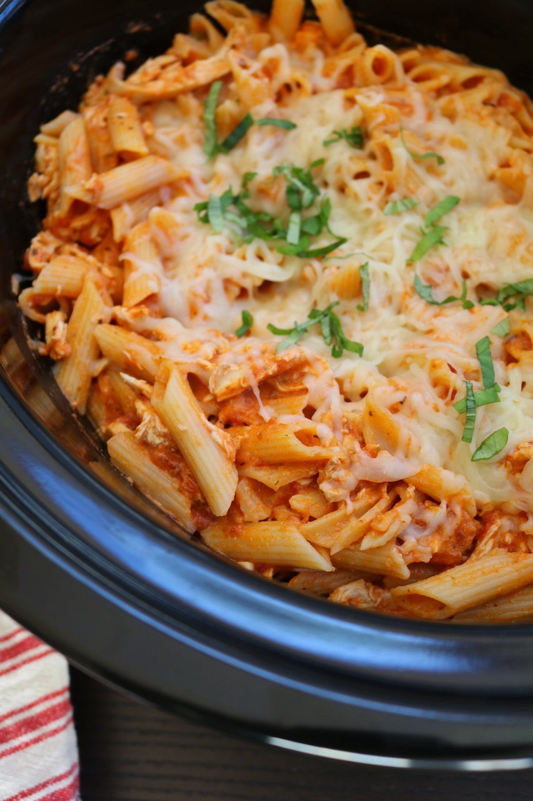

Chicken and Pasta

Description
This is a recipe that I have made multiple times and enjoy every time. It's simple and takes
a couple of hours in the crockpot.
Ingredients
Spaghetti Sauce of choice
Steps
Step 1: Place your raw chicken breasts in the crockpot. If you would like to add some seasoning to it, go ahead.
Step 2: Cover the season with the full container of spaghetti sauce. It should be enough to cover the chicken.
Step 3: Cook the chicken and sauce for 3-4 hours on high, 4-5 hours on low.
Step 4: Once it gets close to the final hour mark for the chicken (I usually do 30 minutes before), shred the chicken.
Step 5: Once shredded and mixed in the sauce, add a half cup of shredded cheese. If you want to add some extra protein, add some cottage cheese as well and stir well.
Step 6: Boil some water to cook the pasta.
Step 7: Strain the water from the pasta and add the pasta into the crockpot. Mix it all together
Step 8: Add some more shredded cheese to the top of the mix and cover for another 10-15 minutes for the cheese to melt and the pasta to abosorb some of the sauce.
Step 9: Add some garnish if you want it to look pretty. Plate and serve your meal.